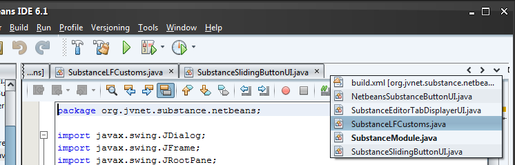

The goal of this subproject is to provide UI delegates for NetBeans custom components. This project is an extension of Substance look-and-feel.
This image shows the tabbed container component of NetBeans under Substance module UI delegate.

This image shows the sliding button component of NetBeans under Substance module UI delegate.
As NetBeans is Swing application, it can be run under any look-and-feel. See this excellent article that describes how to run NetBeans under core Substance look-and-feel.
In addition, NetBeans defines two custom components, tabbed container and sliding button. You can see them in the above screenshots. This subproject provides NetBeans module that provides UI delegates for these two custom NetBeans components. Tim Boudreau of NetBeans team was kind enough to join this project and to provide support for turning this plugin into a NetBeans module. You can download the NetBeans module from Documents & Files section and register it as any regular module. The next run of NetBeans will automatically pick up the Substance look-and-feel.